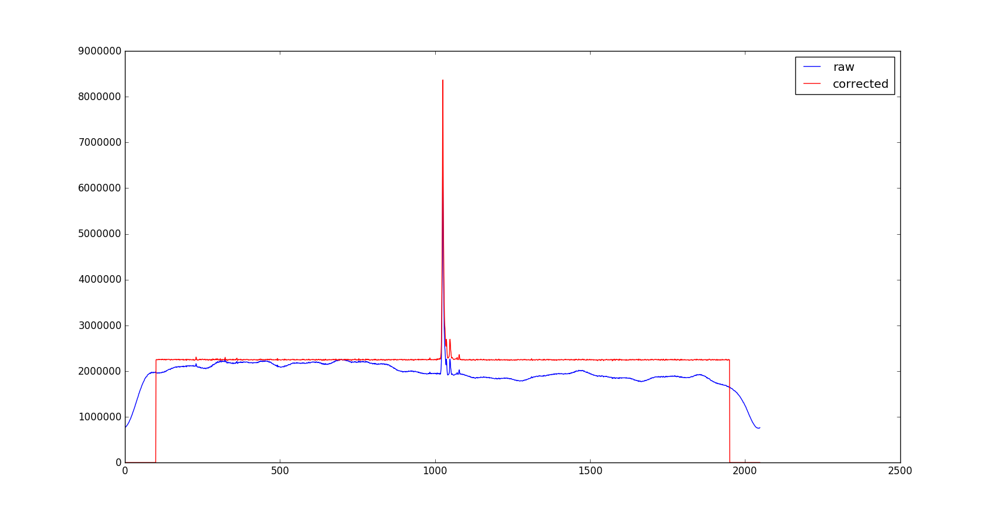

Band Pass Correction¶
Within the DW package there is also a tool for the correction of the band pass, BPC.
The basic idea behind this tool is to select only the data of an observation that do not contain sources or powerful rfi and then build a curve to correct the bandpass of the observation.
This operation can be subdivided in steps:
- Select the usefull data evalutating the median (in the time domain) of every subscan
- Build the median curve of all the selected data
- Fit the median curve
- Normalize the fit at peak
- Divide the raw data for the normalized fit curve and create a new “corrected” data table
After these operations there will be a new table in each subscan file with a “flattened” copy of the data, on which it will be much easier to work with algorithms for the rfi auto detection.
An example of the raw data and the corrected data is shown below.
{kind=link}
Because of the type of operations performed data will be deformed, so this tool is not intended for quantitative measurements but only to facilitate the flagging operations of the data.
BPC provide, like DW, two type of interface: